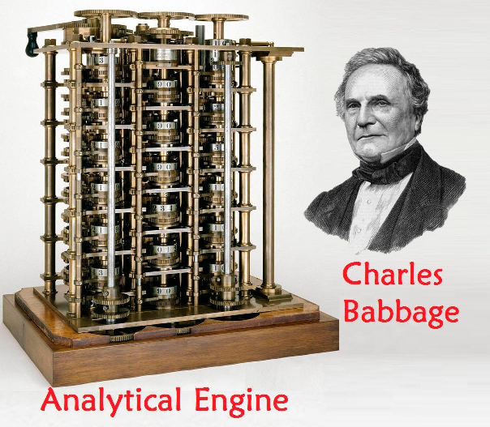

«History of Computers»
The history of computers dates back to ancient times when tools like the abacus were used for basic calculations. Mechanical computing concepts emerged in the 19th century with Charles Babbage’s design of the Analytical Engine, a programmable machine ahead of its time. Although it was never completed, it inspired future innovators. Alan Turing’s work in the 1930s laid theoretical foundations for modern computers, introducing the concept of algorithms and computation. These early efforts marked the beginning of humanity’s quest to build machines capable of complex problem-solving, setting the stage for rapid technological progress in the 20th century.

The mid-20th century saw groundbreaking advancements with the development of electronic computers like the ENIAC in 1945. This machine, designed for high-speed calculations, was enormous and power-hungry but far more efficient than mechanical predecessors. The invention of the transistor in the 1950s revolutionized computers, making them smaller, faster, and more reliable. Programming languages like FORTRAN and COBOL enabled versatile applications, and computer systems became integral to industries such as finance and research. These innovations not only enhanced computational efficiency but also democratized access to technology, setting the foundation for personal computing.
The personal computer revolution of the 1970s and 1980s brought computers into homes and offices. The invention of microprocessors made devices more compact and affordable. Companies like Apple and IBM introduced user-friendly machines like the Apple II and IBM PC, while graphical user interfaces (GUIs) simplified interaction. By the 1990s, the internet expanded the potential of computers, connecting users worldwide. Advances in hardware and software led to laptops, tablets, and smartphones, reshaping communication, work, and entertainment. Today, computers continue to evolve, driving innovation in artificial intelligence, quantum computing, and other cutting-edge fields.

About computers